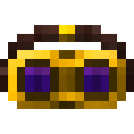
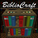
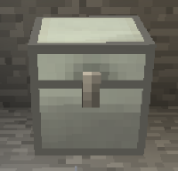
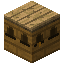
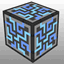
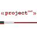
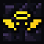
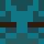

TechnoMagic
Серверы с PVE режимом работающих на версии Minecraft 1.7.10, идеально совместившие в себе технические и магические моды, идеально подойдут игрокам, которые хотят играть на технических серверах, но не могут отказаться от магии. Хочется чего-то экстравагантного? Добро пожаловать на TechnoMagic!
 Версия игры
Версия игры
Minecraft 1.7.10
Размер карты в обычном мире:
15000 на 15000 блоков (радиус)
Размер карты в аду:
10000 на 10000 блоков (радиус)
Размер карты в эндер мире:
неограничен
Дата последнего вайпа
14 ноября 2020
Режим PVP
Настраеваемый командой /pvp
 Порталы доступны на варпе
Порталы доступны на варпе
Команда /warp portals
Установленные модификации:


BiblioCraft
Модификация, добавляющая в игру различные предметы мебели, например, книжные шкафы, а также мерную ленту, служащую для измерения расстояния между блоками.
Biomes O` Plenty
Модификация, расширяющая границы исследования и путешествий в Minecraft. Добавляет большое количество различных биомов земного типа, в стиле фэнтези, а также другие интересные вещи.

Iron Chests
Модификация, которая добавляет улучшенные сундуки из различных материалов, таких, как металлы, алмазы и обсидиан.
IndustrialCraft 2
Модификация для Minecraft, добавляющая промышленное производство: металлургию, электротехнику, агропромышленность, пивоварение. В модификации присутствуют различные виды энергии, новые устройства и инструменты.

Forestry
Модификация для Minecraft, добавляющая новые виды деревьев, предметов и механизмов. Особое внимание уделяется сельскому хозяйству, модификация предоставляет одну из крупнейших многоблочных структур, позволяющую создавать различные типы управляемых и ручных ферм. Forestry также добавляет пчёл, которые могут быть размещены в пчелиных домах, на пасеках или в огромных ульях. Пчёл можно выводить из различных видов, они будут давать различные преимущества для игрока. В свою очередь, эти пчелы могут использоваться для разведения деревьев, некоторые из них могут быть фруктовыми, фрукты можно использовать в качестве пищи. Различные породы деревьев в конечном итоге привлекают бабочек, которых также можно поймать и развести.
Thermal Expansion
Модификация, которая добавляет в игру новую механику обработки ресурсов, организацию автоматического производства, новые ресурсы, их обработчики, а также энергию и устройства её выработки и хранения.

Applied Energetics 2
Модификация, содержащая большое количество нового контента, в основном сосредоточенного вокруг концепции использования и преобразования энергии уникальным способом.

Project Red
ProjectRed это мод от Mr_TJP и ChickenBones. Этот мод является неофициальным продолжением Redpower 2 мода, использует весь исходный код. Этот мод ориентирован на RedStone схемы, логистику, автоматизацию, декорирование и строительство крупных механизмов. Кроме того, он включает в себя собственную энергетическую систему, называемую Electrotine Power, которая требуется для работы различных машин из ProjectRed.

Extra Utilities 2
Модификация без определённой тематики, добавляющая различные полезные предметы и элементы, такие как трубы, генераторы и магические вещи.

Ender IO
Модификация, которая добавляет в игру различные машины, генераторы для производства RF-энергии, приборы для удалённого доступа к предметам, трубы для транспортировки и резервуары для хранения предметов, жидкостей, энергии, а также провода для передачи сигналов красного камня.
Draconic Evolution
Модификация, создаваемая brandon3055, которая добавляет новые мощные инструменты, броню, машины и различные элементы. Модификация базируется вокруг своего блока руды — дракониевой руды (которая генерируется в Обычном и Нижнем мире, а также в Крае). Используется энергия Redstone Flux из модификации Thermal Expansion. Также модификация добавляет ритуалы, исследования и многое другое.
Avaritia
Модификация, добавляющая множество очень мощных инструментов и предметов, с очень дорогими рецептами для их создания.
Thaumcraft 4.3.2.5
Глобальная модификация для Minecraft, созданная Azanor, которая добавляет в игру магию.
Botania
Модификация, которая основывается на магической энергии, производимой цветами и прочей растительной жизнью.